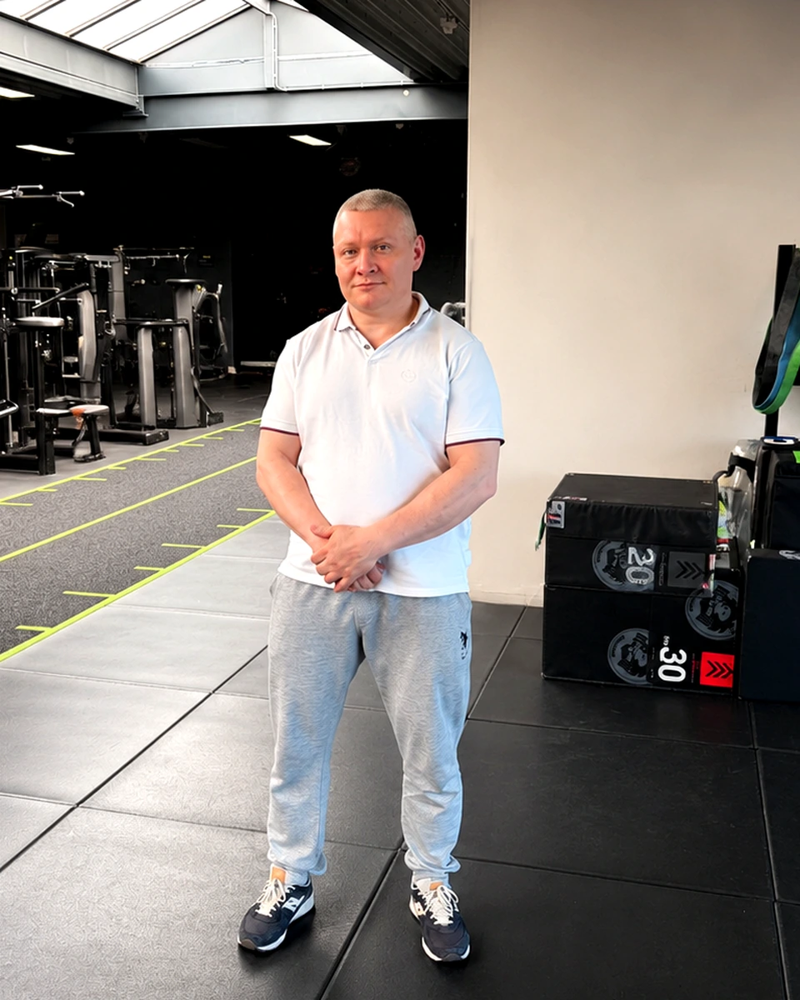

Beweging beoordelen
We brengen mobiliteit, stabiliteit, kracht, pijnreacties en bewegingscontrole in kaart.
Powered by AIM Method
Medische fitness • Performance • Herstel
Movement is learned. Adaptation is earned.
Wat is AIM Method?
AIM Method is opgebouwd rond assessment, motor control, progressieve belasting, adaptatie en een individuele trainingsstrategie. Geen random workouts, maar een logisch systeem dat beweging eerst begrijpt en daarna gericht sterker maakt.
We brengen mobiliteit, stabiliteit, kracht, pijnreacties en bewegingscontrole in kaart.
Je leert posities, spanning en timing beter controleren voordat intensiteit omhoog gaat.
Belasting wordt stap voor stap opgebouwd zodat weefsels, conditie en kracht kunnen aanpassen.
Training wordt vertaald naar dagelijkse beweging, werk, krachttraining of vechtsport.
Voor wie
Voor volwassenen met pijn, blessures, lage belastbaarheid, obesitas of post-rehab doelen.
Voor sporters en fitnessklanten die sterker, atletischer en technisch beter willen bewegen.
Voor MMA, boksen, grappling en vechtsport met focus op kracht, mobiliteit en robuustheid.
Voor toekomstige coaches die training willen begrijpen vanuit biomechanica en adaptatie.
Het AIM proces
Analyse van bewegingskwaliteit, krachtprofiel, beperkingen, doelen en trainingsgeschiedenis.
Herstellen van controle, stabiliteit en vertrouwen in beweging met gerichte oefeningen.
Progressieve opbouw van kracht, uithoudingsvermogen, mobiliteit en belastbaarheid.
Toepassen van de nieuwe capaciteit in sport, werk, dagelijkse activiteiten en lange termijn training.
Diensten
Persoonlijke begeleiding voor veilig trainen met klachten, beperkingen of hersteldoelen.
Individuele training voor kracht, conditie, techniek en lichaamscontrole.
Fysieke voorbereiding voor striking, grappling, MMA en wedstrijdgerichte belastbaarheid.
Een gestructureerde analyse als basis voor een effectief en realistisch trainingsplan.
Gerichte training in kleine groepen met persoonlijke correctie en duidelijke progressie.
Programmering, techniekfeedback en begeleiding op afstand voor consistente vooruitgang.
Waarom OverWinnen
OverWinnen combineert praktische coachingervaring met een science-based aanpak. De basis ligt in medische fitness, individuele progressie en het bouwen van lange termijn adaptatie.
About Anton
Founder of OverWinnen & Creator of the AIM Method
Anton Klimov is a strength coach and medical fitness trainer with more than 15 years of coaching experience.
His work combines medical fitness, movement education, strength training, biomechanics, motor learning, combat sports preparation, and modern principles of adaptation.
Through the AIM Method, Anton helps people move better, recover smarter, and build long-term physical capacity.

Start met een assessment
Het begint met begrijpen hoe jouw lichaam beweegt, adapteert en reageert op training.